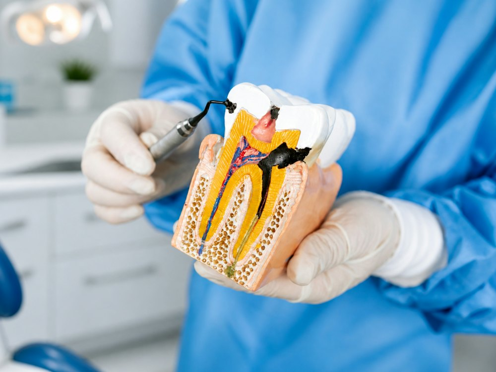
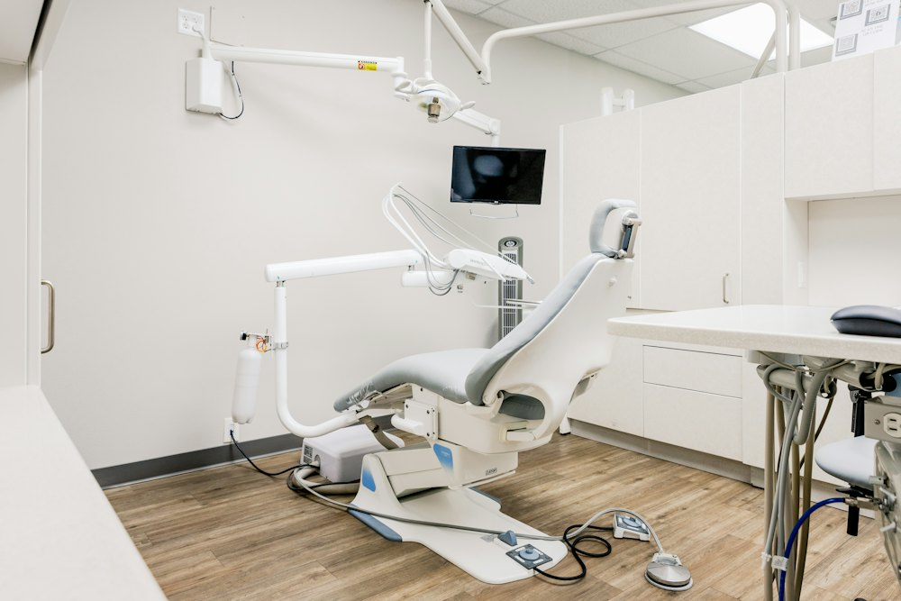
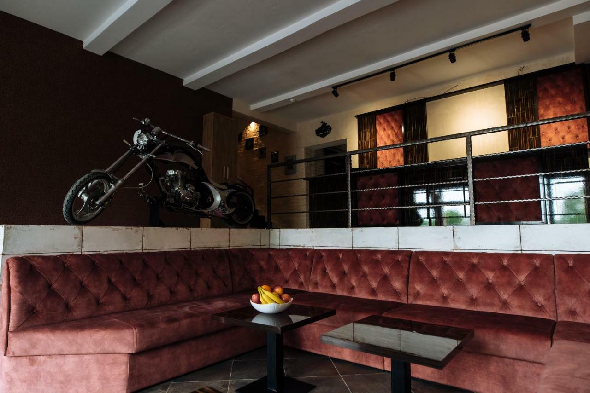

Огляд і план
Лікар дивиться на всю картину, а не на один зуб, пояснює, що відбувається, і разом з вами складає план: що робити зараз, а що може зачекати.
Івано-Франківськ · вул. Гетьмана Мазепи, 58
Лікування, гігієна, відбілювання, імпланти, коронки, брекети й елайнери в одній клініці в центрі міста. Спочатку уважний огляд і зрозумілий план, потім лікування.

Фото тимчасове · замінимо на фото клініки
З чого почати
Оберіть свою ситуацію, і ми підкажемо, до якого напрямку записатися.

Терапія
Лікар знайде причину болю й вилікує карієс або поставить пломбу. Що раніше прийти, то простіше й дешевше лікування.
Послуги
Шість напрямків в одній клініці: не треба шукати окремо хірурга, ортопеда й ортодонта. Натисніть на напрямок, щоб побачити всі послуги.
Лікуємо карієс і відновлюємо зуби пломбами. Зміцнюємо емаль і захищаємо жувальні зуби від карієсу.

Професійна чистка знімає камінь і наліт, які не бере щітка. Після неї можна обрати відбілювання: лазерне або фото.

Відновлюємо втрачені зуби імплантами, а якщо кістки замало, робимо кісткову пластику. Видаляємо корені й кісти, лікуємо ясна.
Повертаємо зубам форму й колір: коронки, мости, вкладки, а для естетики фронтальних зубів вініри та люмініри.

Вирівнюємо зуби брекетами або майже непомітними елайнерами. Після лікування ретейнер тримає результат.
Спокійний перший досвід у стоматолога для дитини: огляд, лікування молочних і постійних зубів, захист жувальних зубів від карієсу.
Перелік дитячих послуг уточнити в клініки
Записати дитину →Історія усмішки
Лікар дивиться на всю картину, а не на один зуб, пояснює, що відбувається, і разом з вами складає план: що робити зараз, а що може зачекати.
Ультразвук знімає камінь, Air Flow прибирає наліт від кави й чаю, полірування робить емаль гладкою. Часто вже після чистки зуби стають помітно світлішими.
Лікуємо карієс, відновлюємо зуби пломбами, вкладками, коронками або імплантами. Якщо зуби криві, ортодонт запропонує брекети чи елайнери.
Лазерне або фотовідбілювання на здорових зубах. Для фронтальних зубів, які відбілювання не змінить, є вініри й люмініри.
Почати свою історіюVITA — шкала, за якою стоматологи в усьому світі визначають колір зубів. Наскільки посвітлішають саме ваші зуби, залежить від емалі. Це лікар скаже після огляду.


Фото тимчасові · замінимо на фото кабінетів White Story
Про клініку
White Story працює на вулиці Гетьмана Мазепи, 58. Пацієнти найчастіше пишуть про уважних лікарів, приємний персонал і результат, який хочеться показувати.
Імена, фото й досвід лікарів уточнити в клініки (лікаря Андрія згадує пацієнт у відгуку)
Відгуки
«Привели мою посмішку в порядок, дуже задоволений роботою професіоналів своєї справи! Рекомендую!!»
«Хороший спеціаліст лікар Андрій. Щиро дякую за професійно виконану імплантацію»
«Гарна клініка. Лікарі професіонали. Задоволений візитом. Рекомендую!»
«Дуже задоволені роботою, дуже приємний персонал. 100% рекомендую»
«Дякую за хорошу роботу усім задоволений рекомендую.»
Відгуки пацієнтів з каталогу e-gov.in.ua, дослівно. Після запуску додамо свіжі відгуки з Google.
Питання

Вартість залежить від стану зубів і обраного плану. Точну суму лікар назве після огляду, а орієнтовну ціну можна запитати телефоном.
Так. Клініка приймає з понеділка по суботу з 9:00 до 20:00. Неділя вихідний.
Так, у White Story є дитячий прийом. Під час запису скажіть вік дитини, і ми підберемо зручний час.
Обидва способи вирівнюють зуби. Елайнери майже непомітні й знімаються, брекети підходять для складніших випадків. Що краще саме вам, підкаже ортодонт на консультації.
Часто так. Якщо кістки стало менше, хірург може запропонувати кісткову пластику. Усе вирішується після огляду й знімка.
Візьміть знімки, якщо робили їх раніше, і згадайте, які ліки приймаєте. Якщо щось болить, скажіть про це під час запису.
Контакти
| Понеділок | 9:00–20:00 |
|---|---|
| Вівторок | 9:00–20:00 |
| Середа | 9:00–20:00 |
| Четвер | 9:00–20:00 |
| П'ятниця | 9:00–20:00 |
| Субота | 9:00–20:00 |
| Неділя | вихідний |
Зараз відчинено